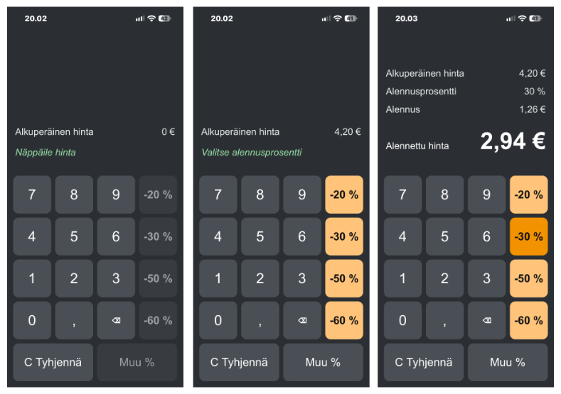

Alennuslaskin
Alennuslaskimella voit laskea tuotteen alennetun hinnan, kun alennus on merkitty prosentteina.
Alennuslaskin on verkkosivu, jonka voit lisätä puhelimen aloitusnäytölle kuvakkeeksi. Kun painat kuvaketta, alennuslaskin aukeaa samalla tavalla kuin sovellus. Voit lisätä kuvakkeen selaimessa.
Alennuslaskimen osoite on https://pikavalko.github.io/alennuslaskin/.
Näin lisäät alennuslaskimen puhelimen aloitusnäytölle
Avaa alennuslaskin puhelimen selaimessa. iPhonessa selain on yleensä Safari. Android-puhelimessa selain on yleensä Chrome tai Samsung Internet.
Linkki voi aueta viestisovelluksessa, esimerkiksi WhatsAppissa tai Messengerissä. Kopioi silloin alennuslaskimen osoite ja liitä se selaimen osoitepalkkiin.
iPhone (Safari)
- Paina . Jos painike ei ole näkyvissä, paina ensin .
- Valitse valikosta Lisää Koti-valikkoon.
- Paina Lisää-painiketta.
Android (Chrome)
- Paina .
- Valitse valikosta Asenna ja luo pikakuvake.
- Paina Asenna-painiketta.
Android (Samsung Internet)
- Paina .
- Valitse valikosta Lisää sivu kohteeseen.
- Valitse Alkunäyttö.
- Paina Lisää-painiketta.